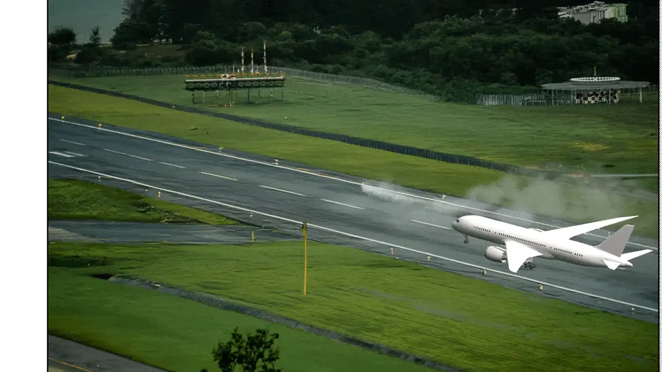

Internship · Applica Training Systems
Applica
Under internshipet arbeidet jeg med innhold til e-læring og visuell produksjon på tvers av Photoshop, After Effects og Blender.
August – november 2025Motion design
Landing Video
Videoen er en del av e-læringskurset jeg lagde hos Applica.
Arbeidsområder
Fra faglig innhold til visuell presentasjon.
Jeg arbeidet med å utvikle og strukturere e-læringsinnhold for profesjonelle virksomheter, og med å tilpasse teknisk og faglig innhold til ulike målgrupper.
Den visuelle delen av internshipet ga meg praktisk erfaring med bildebehandling i Photoshop, animasjon og motion design i After Effects samt 3D-modellering i Blender. Jeg fikk også erfaring med kvalitetssikring, dokumentasjon og organisering av innhold.
Dette jobbet jeg med
E-læringsinnhold
Utvikling og strukturering av opplæringsinnhold for profesjonelle virksomheter.
Photoshop
Bildebehandling og grafiske elementer som del av visuelt innhold til kurs og presentasjoner.
After Effects
Animasjon og motion design, blant annet arbeidet med landing-videoen vist over.
Blender
3D-modellering og arbeid med digitale objekter og visuelle elementer.
Utvalg fra internshipet
Bilder
Fire plasser for skjermbilder, grafikk eller 3D-arbeid fra Applica. Bytt plassholderne med dine egne filer når de er klare.
